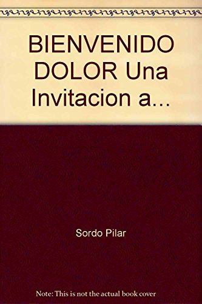
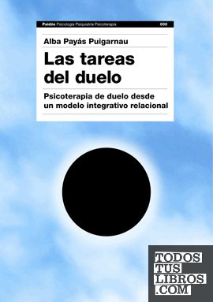

Libros de duelo y pérdidas
Libros de duelo y pérdidas en español: 18 libros completos para leer gratis aquí mismo y 21 fichas de títulos actuales.
DueloDuelo en la adolescenciaDuelo migratorioDuelo perinatalCuidados paliativosMuerte y morirDuelo por la muerte de un ser queridoPérdidas significativasDuelo en la infanciaDuelo amorosoViudezRecuperación tras una pérdidaHablar de la muerte con los niñosAcompañamiento en el dueloRituales de despedida
El dueloMartín-Pozuelo Martín, Mónica; Sánchez, Alberto; Monfort, Jaume; Kulisevsky, Elena; Planellas, Irina
El dueloMartín-Pozuelo Martín, Mónica; Sánchez, Alberto; Monfort, Jaume; Kulisevsky, Elena; Planellas, IrinaDuelos migratorios y estrés aculturativo en la niñez y la adolescencia migrante. Un estudio etnográfico en Oaxaca, MéxicoRodríguez Cruz, Marta
Duelos migratorios y estrés aculturativo en la niñez y la adolescencia migrante. Un estudio etnográfico en Oaxaca, MéxicoRodríguez Cruz, MartaEl proceso de duelo y emocionesLópez, Jorge S.; Martín López, María Jesús; Martínez, José Manuel; Ratón Berlanga, Marta; Soria-Oliver, María; García Sánchez, Rubén
El proceso de duelo y emocionesLópez, Jorge S.; Martín López, María Jesús; Martínez, José Manuel; Ratón Berlanga, Marta; Soria-Oliver, María; García Sánchez, RubénMás allá de la muerte : hacia una antropología de la memoria y de los objetosBustamante Danilo, Javiera
Más allá de la muerte : hacia una antropología de la memoria y de los objetosBustamante Danilo, JavieraLa muerte perinatal, un ciclón devastador
La muerte perinatal, un ciclón devastadorGeneralidades de los cuidados paliativos pediátricos
Generalidades de los cuidados paliativos pediátricosResiliencia, educación emocional y duelo. Formación para futuros docentesMATEU PÉREZ, ROSA; Escobedo Peiro, Paula; Flores Buils, Raquel
Resiliencia, educación emocional y duelo. Formación para futuros docentesMATEU PÉREZ, ROSA; Escobedo Peiro, Paula; Flores Buils, RaquelReflexiones Sobre La Muerte Y El DueloMiller, Elena
Reflexiones Sobre La Muerte Y El DueloMiller, ElenaLa pulsión de muerte y el juego en el psicoanálisis de niñosZelaya P., Carmen Rosa
La pulsión de muerte y el juego en el psicoanálisis de niñosZelaya P., Carmen RosaCoplas por la muerte de su padreJorge Manrique
Coplas por la muerte de su padreJorge ManriqueCuentos de amor de locura y de muerteHoracio Quiroga
Cuentos de amor de locura y de muerteHoracio QuirogaEl Señor y lo demás, son cuentosLeopoldo Alas «Clarín»
El Señor y lo demás, son cuentosLeopoldo Alas «Clarín»Insolación y MorriñaEmilia Pardo Bazán
Insolación y MorriñaEmilia Pardo BazánLa sirena negraEmilia Pardo Bazán
La sirena negraEmilia Pardo BazánDuelo. Cómo afrontar la pérdidaJenaro Río, Cristina
Duelo. Cómo afrontar la pérdidaJenaro Río, CristinaEl Duelo En La Ficción. Seleccion TextosJuan Díaz Curiel
El Duelo En La Ficción. Seleccion TextosJuan Díaz CurielUna infancia bajo amenazade muerte : los niños en situación de calle en las grandes urbes ColombianasZambrano Gutiérrez, Ivannsan; Rojas, Claudia; Cano Higuita, Yearleydi
Una infancia bajo amenazade muerte : los niños en situación de calle en las grandes urbes ColombianasZambrano Gutiérrez, Ivannsan; Rojas, Claudia; Cano Higuita, YearleydiNieblaMiguel de Unamuno
NieblaMiguel de UnamunoUn hombre llamado OveFredrik Backman
Un hombre llamado OveFredrik BackmanEl año del pensamiento mágicoJoan Didion
El año del pensamiento mágicoJoan DidionEl principitoAntoine de Saint-Exupéry
El principitoAntoine de Saint-ExupéryRecuerda que vas a morir. VivePaul Kalanithi
Recuerda que vas a morir. VivePaul KalanithiUn monstruo viene a vermePatrick Ness
Un monstruo viene a vermePatrick NessEl mundo amarilloAlbert Espinosa
El mundo amarilloAlbert EspinosaLa ridícula idea de no volver a verteRosa Montero
La ridícula idea de no volver a verteRosa MonteroLo que no tiene nombrePiedad Bonnett
Lo que no tiene nombrePiedad BonnettBienvenido dolorPilar Sordo
Bienvenido dolorPilar Sordo
Querido Diego, te abraza QuielaElena Poniatowska
Querido Diego, te abraza QuielaElena PoniatowskaLa treguaMario Benedetti
La treguaMario BenedettiLa última lecciónRandy Pausch
La última lecciónRandy PauschEl olvido que seremosHéctor Abad Faciolince
El olvido que seremosHéctor Abad FaciolinceEl camino de las lágrimasJorge Bucay
El camino de las lágrimasJorge BucaySobre el duelo y el dolorElisabeth Kübler-Ross y David Kessler
Sobre el duelo y el dolorElisabeth Kübler-Ross y David KesslerLa rueda de la vidaElisabeth Kübler-Ross
La rueda de la vidaElisabeth Kübler-RossMartes con mi viejo profesorMitch Albom
Martes con mi viejo profesorMitch AlbomEl guardián entre el centenoJ. D. Salinger
El guardián entre el centenoJ. D. SalingerPaulaIsabel Allende
PaulaIsabel AllendeLas tareas del dueloAlba Payàs
Las tareas del dueloAlba Payàs
La casa de Bernarda AlbaFederico García Lorca
La casa de Bernarda AlbaFederico García Lorca¿Estás eligiendo carrera?
Haz gratis el test de orientación vocacional de AURZANE: intereses, aptitudes, autoconcepto y hábitos de estudio, con informe completo.